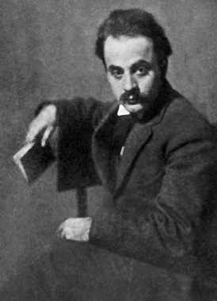
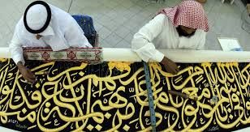
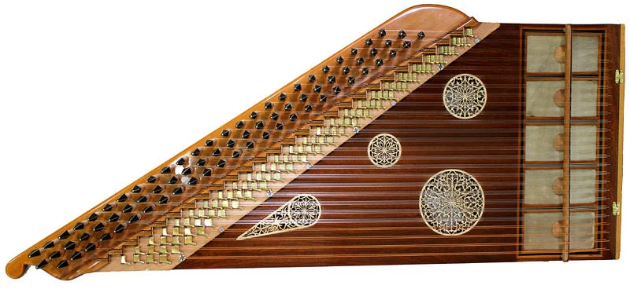
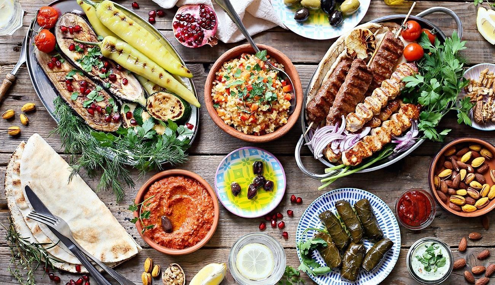
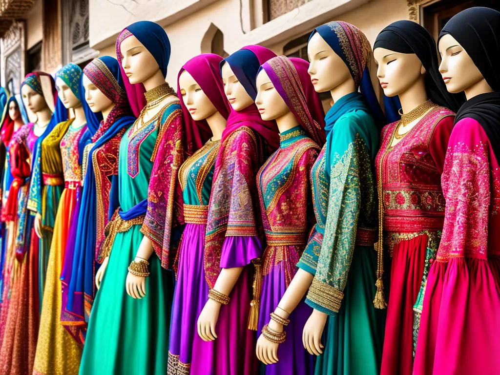

Religião
• Religiões Dominantes:
O Oriente Médio é o berço de três das principais religiões
monoteístas: judaísmo, cristianismo e islamismo. Cada uma tem um impacto profundo
nas tradições culturais e sociais.
• Práticas Religiosas:
As práticas e festivais religiosos, como o Ramadã no islamismo e o
Yom Kipur no judaísmo, desempenham um papel central na vida cotidiana.
2. Língua
• Diversidade Linguística:O árabe é a língua mais falada, mas outras línguas, como
turco, persa e hebraico, também são significativas. Cada língua carrega sua própria
literatura e tradições.
3. Literatura e Poesia
• Herança Literária:O Oriente Médio possui uma rica tradição literária, com obras
clássicas como "As Mil e Uma Noites" e poetas renomados como Rumi e Khalil Gibran.

• Poesia Oral:A poesia oral e as histórias contadas são formas importantes de
transmissão cultural.
4. Artes Visuais
• Caligrafia:A caligrafia árabe é uma forma de arte altamente valorizada, muitas vezes
associada à religião e à estética.

• Arquitetura:A arquitetura islâmica é famosa por suas mesquitas majestosas, palácios
e mercados, incorporando elementos como arcos, azulejos e fontes.
5. Música e Dança
• Tradições Musicais:A música no Oriente Médio varia amplamente, com estilos
regionais distintos. Instrumentos como o oud e o qanun são populares.

• Dança:Danças tradicionais, como a dança do ventre, têm raízes profundas na cultura
da região.
6. Culinária
• Rica Variedade:A culinária do Oriente Médio é diversa, com pratos emblemáticos
como falafel, hummus, kebabs e baklava. Os temperos e ervas são essenciais para a
cozinha regional.

• Influências Regionais: As tradições culinárias variam entre países, refletindo
influências árabes, persas, turcas e mediterrâneas
7. Costumes e Tradições
• Hospitalidade:: A hospitalidade é uma característica central da cultura, com tradições
de receber convidados e compartilhar alimentos.
• Vestimenta Tradicional:A vestimenta varia de acordo com o país e a região, com
roupas tradicionais que refletem a identidade cultural e religiosa.

• Cultura e Religião: O Egito, ao longo do rio Nilo, é famoso por suas pirâmides, templos
e uma rica mitologia. Os faraós eram considerados deuses e governantes.
• Contribuições: Os egípcios desenvolveram uma forma de escrita hieroglífica e
avançaram em medicina, arquitetura e agricultura.
• Diversidade: Hoje, o Islã é dividido em várias correntes, sendo as duas maiores o
sunismo e o xiismo. Cada uma possui suas próprias tradições e interpretações.
• Impacto Global: O Islã continua a desempenhar um papel significativo nas questões
políticas, sociais e culturais em várias partes do mundo.
VOLTAR